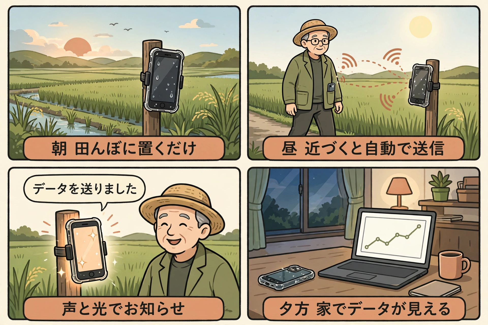
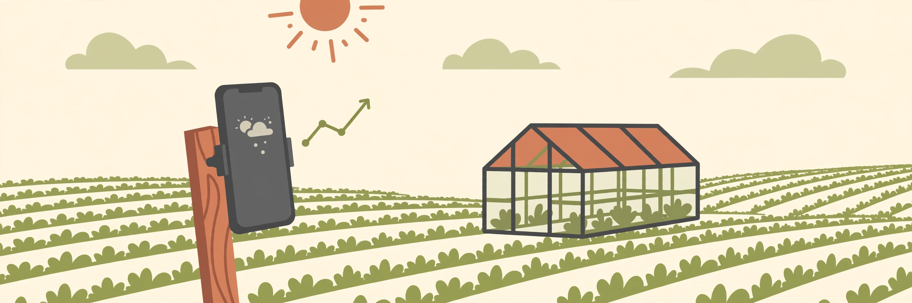
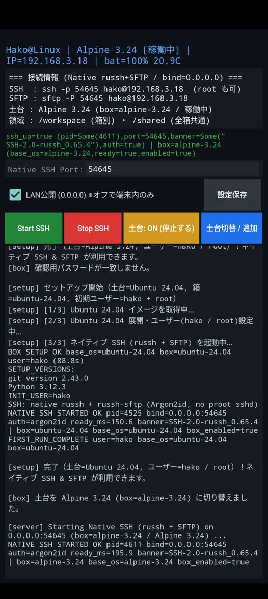
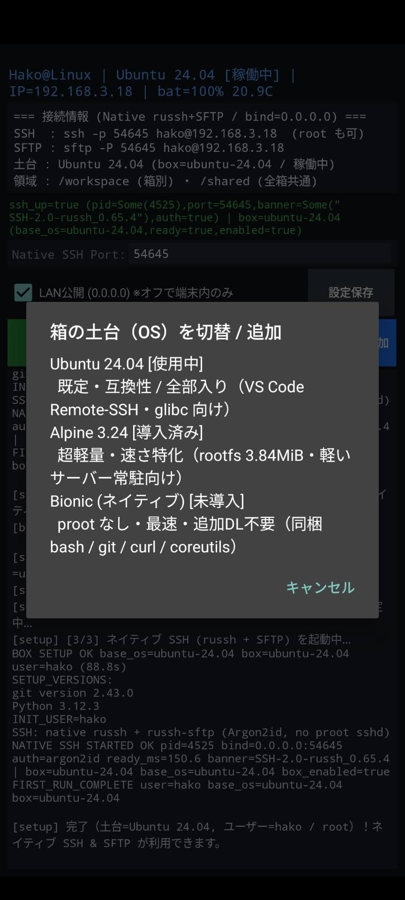

引き出しの中の古いスマホが、
サーバーになります。Hako@Linux ― 電話の中に立つ Linux の箱
アプリを入れるだけで、Android の電話が小さな Linux サーバーに変わります。専用の機械を買わなくても、手元の電話がそのまま使えます。


できること
サーバーというと、大きな機械と契約の話になりがちです。これは違います。
電話1台で、全部入り
普通のサーバーには別々に要る物――電池、時計、気圧や明るさを測るセンサー、通信の仕組み――が、電話には最初から全部入っています。停電しても、電池で動き続けます。
ネットが無くても動く
外のサービスに頼らないので、教室の中だけ、建物の中だけでも動きます。ネットの無い所や、ネットに出したくない物を置く場所に使えます。
電気をほとんど食わない
画面を消して置きっぱなしにする実験では、電池の減りは1時間で 2% でした。計算では、満充電で約 50 時間、測り続けることができます（実験段階の測定）。
古い電話がよみがえる
2019年発売の Pixel 3a でも動いています。アプリ本体は 15.80 MiB と小さいので、眠っている電話の使い道になります。
使い方の場面
例えば、こんな所で使えます。

学校の授業で
プログラミングの授業で使う「ソースコードの置き場」を、電話1台で用意できます。生徒のアカウント登録は不要で、ネットが無くても授業が進みます。

農業の現場で
畑やハウスのそばに置いて、気圧や明るさなどを置きっぱなしで記録します。電池で長く持つので、コンセントの無い場所にも置けます。記録は後からパソコンで取り出せます。

水産業の現場で
漁港や養殖場のような、ネットが弱い場所の記録係に。電話1台でその場の状態を記録して貯めておき、戻ってからまとめて送れます。

工業・建設の現場で
ネットに出せない記録の置き場に。閉じたネットワークの中で、現場のデータを手元に貯めておけます。
機能一覧
今の Android 版でできることです。
箱の基本
アプリを入れるだけで、電話が Linux サーバーになります。土台は Ubuntu 24.04、Alpine 3.24、Bionic の3つから切り替えでき、土台の中では apt や apk で普通にソフトを入れられます。土台の切り替えは、アプリのボタンのほか、SSH の中から hako base use でもできます。
入り口
自作の SSH サーバー（Rust 製）で、パスワード認証、SFTP、ポート転送に対応します。土台を切り替えても SSH サーバーは再起動せず、接続中の作業はそのまま続き、新しい接続だけ新しい土台へ入ります。土台が止まっていても Bionic 側のシェルで応答します。接続情報は QR コードで表示し、USB シリアルでもつながります。
サービス
Forgejo、code-server、nginx などは、hako up でレシピから足せます。本体は公式の配布元から取り、ハッシュで照合します。カタログは Hako Hub です。
ネイティブ部品
git、curl、bash、tmux、Vim、jq、SQLite などを、Bionic ネイティブで用意しています。
センサー
気圧、明るさ、加速度、電池の状態を、箱の中から読めます。Python からも使えます。置きっぱなしの記録は、画面を消して1時間の測定で、欠けた記録がありませんでした。
数字で見る
実機で測った数字です。
画面
電話側の画面は、状態の確認とボタンだけです。操作はパソコンから行います。



仕組み（技術者向け）
仮想マシンは使いません。電話のカーネルを共用し、土台（Ubuntu 24.04／Alpine 3.24／Bionicのみ）は proot の中で動かします。速さが要る物は Bionic ネイティブ側に、互換性が要る物は土台の中に置くのが、実測から決めた振り分けです。
入り口は自作の SSH サーバーです。Rust のライブラリ russh で作り、起動 14.0 ms、待ち受け 2.43 MiB。土台が止まっていても Bionic 側のシェルで応答します。サービス（Forgejo、code-server、nginx）は同梱せず、hako up でレシピから足します。本体は公式の配布元から取り、ハッシュで照合します。
詳しくは 技術記事「電話の中に立つ Linux の箱」 に、実測と一緒に書いてあります。